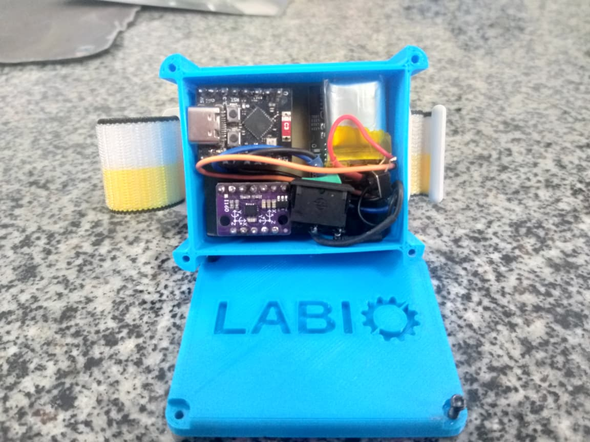
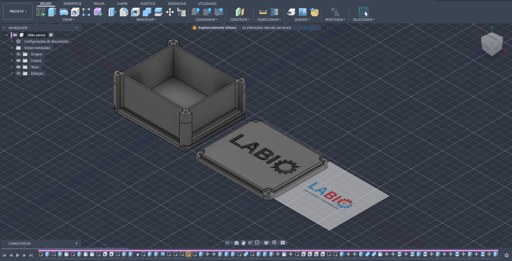
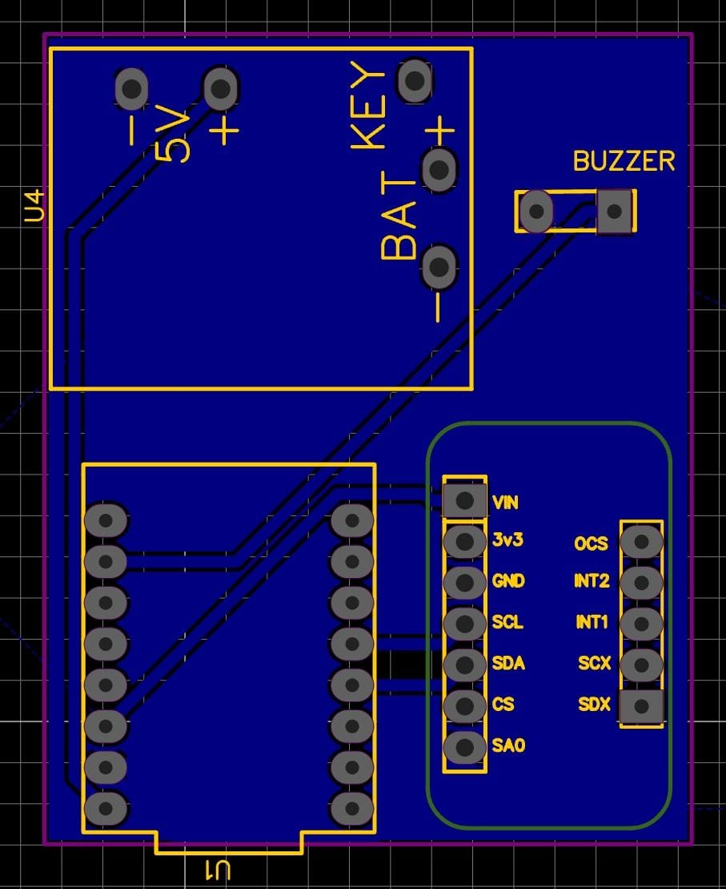

PULSEIRA LABIO // PROTÓTIPO FÍSICO

01 // VISÃO GERAL
Foto do Protótipo Físico

02 // CASE 3D
Design do Case e Impressão 3D

03 // CIRCUITO
Montagem do Circuito

04 // PLATAFORMA WEB
Site de Visualização dos Dados